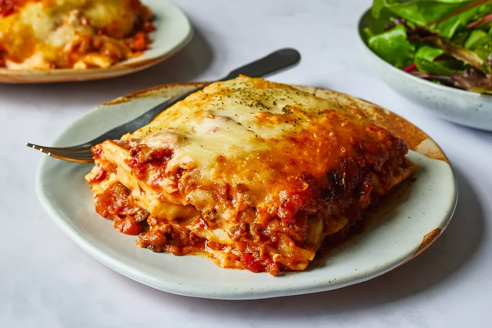

Lasagna

Description
Inspired by our vacations in Italy, we created the perfect lasagna recipe for us. We want to share it with you and hope that you like it as much as we do :) It works best if you use fresh herbs!
Ingredients
- ground beef
- carrots
- shallots
- garlic
- tomato purée (passata)
- tomato paste
- oregano
- basil
- thyme
- salt
- pepper
- olive oil
- butter
- flour
- milk
- nutmeg
- lasagna noodle
- Parmesan cheese
- Gouda cheese
Steps
- Chop shallots and garlic, cut the carrots into small cubes and sauté everything in a pot with olive oil until translucent.
- Add ground beef and fry, stirring occasionally, until crumbly. Season with salt and pepper.
- Then add tomato purée and tomato paste. Cover and simmer over medium heat for approx. 15 – 20 min. Add oregano, basil, and thyme, and season with salt and pepper.
- In the meantime, preheat oven to 390°F/200°C. Turn on the convection setting if you have one. For the béchamel sauce, melt butter in a small saucepan. Add flour and cook until translucent, stirring constantly. Add the cold milk in portions and cook over high heat, stirring with a whisk until thickened. Season with salt, pepper and nutmeg.
- Cover the bottom of a baking dish first with a layer of bolognese and then with lasagna noodles. Layer béchamel sauce on top. Repeat this process, finishing with béchamel sauce.
- Sprinkle with freshly grated Parmesan and Gouda cheese to taste and bake in the preheated oven at 390°F/200°C for approx. 35 min. until golden brown. Let cool for approx. 20 min. before serving. Enjoy!